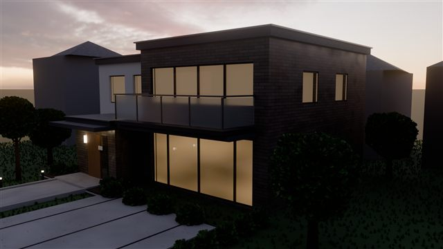
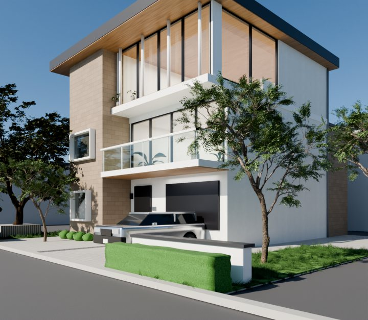
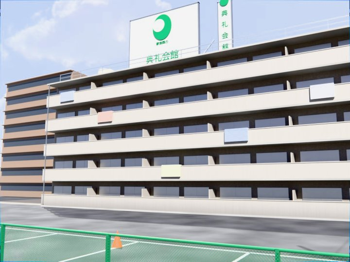
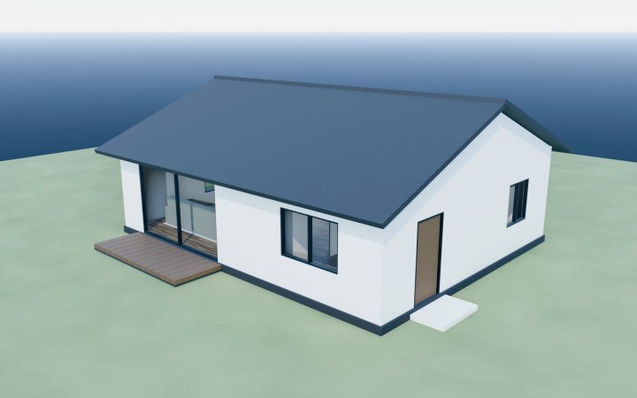
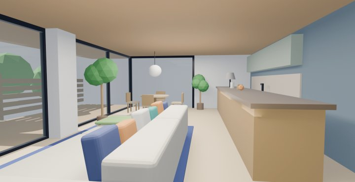
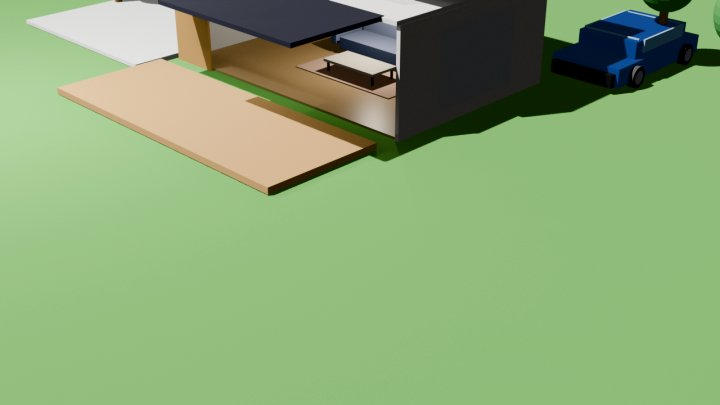

生成AI 技術検証サイト
Claude Code をはじめとする生成AI技術の動作確認・テストを行うためのサイトです。
Powered by Claude Codeこのサイトについて
目的
生成AIを活用したウェブ開発・自動化技術の検証と記録
主な対象
Claude Code / Anthropic API / MCP / その他LLMツール
成果物
検証レポート・サンプルコード・ベストプラクティスの共有
検証事例
⛳
ゴルフスイング分析ツール
AIが骨格を検出してスイングを自動採点 — テンポ・軸ブレ・前傾キープなどの良い点と改善ドリルをフィードバック。スロー再生・角度計測・2画面比較も。動画は端末内で処理され、アップロードされません。
2026-07-14
実在モデルハウスの再現 — カサート プレミアム風（昼景・夕景）
パナソニック ホームズの最上位商品をWeb調査から再現。キラテックタイル・窓の掘り込み・リーフインスタンス植栽・HDRI夕景＋窓明かりの点灯表現まで4プロンプトで到達。
2026-07-16 〜 07-17
実在モデルハウスの再現 — BIENA風（外観・内観）
URLひとつから積水ハウス「ビエナ」を再現。PBRタイル外壁・ガラス透過・内観造作・フォトスキャン植栽まで対話のみで到達。
2026-07-06 〜 07-14 更新
SUUMO掲載の実在賃貸マンション再現（外観）
掲載写真を参考に賃貸マンションを再現。タイル外壁・実写PBR・金網フェンスや電柱などの細部、クラッシュからの自動復旧まで検証。
2026-07-12 〜 07-13 更新
間取りデータからの完全プロシージャル住宅生成
間取り情報のみを入力に、躯体・建具・家具・照明を含む住宅一棟をPythonで一括生成。AIの自己検証・修正フローも確認。
2026-07-09
実在内観写真を参考にしたLDKモデリング
積水ハウス「リエゾン」の内観写真を参照し、家具・照明・マテリアルを含むLDK空間を再現。
2026-07-06
自然言語のみでモダンハウス生成
プロンプトだけで外観・内観・プール・乗用車まで含むモダンハウス一式を生成した初期検証。
2026-05-06📊
Blender + AI連携 解説スライド
Blender MCP 連携の仕組みとワークフローをまとめた解説スライド。
2026-05-06検証中のツール
Claude Code
検証中
Anthropic API
検証中
MCP (Model Context Protocol)
検証中
GitHub Copilot
予定
検証ログ
2026-07-17
カサート プレミアム風モデルを夕景仕様に — サンセットHDRI（太陽方位を画像解析で自動配置）・内観ライト点灯・玄関植栽・ボラードライト — 詳細を見る
2026-07-16
パナソニック ホームズ「カサート プレミアム」風モデルハウスをWeb調査から新規モデリングし、3段階でフォトリアル化（Cycles・タイルUV・GN芝・窓の掘り込み・ガラス手すりバルコニー・リーフインスタンス樹木） — 詳細を見る
2026-07-16
スイング分析に「レッスンノート」機能を追加 — ホワイトボード写真の保存・拡大表示、コーチの指摘テーマをAI分析と連携して「クリアできたか」を自動判定 — 使ってみる
2026-07-14
ゴルフスイング分析ツールにAI自動フィードバック機能を追加 — MediaPipe姿勢推定でテンポ・軸ブレ・前傾キープ等を自動評価し、良い点と改善ドリルを提案（ブラウザ内で完結） — 使ってみる
2026-07-14
BIENA風モデルを環境・後処理面で強化 — パーティクル芝・背景の隣家・外構/建物ディテール・被写界深度・コンポジット（アーキビズ講座のワークフローを参考） — 詳細を見る
2026-07-13
SUUMO再現マンションを大規模アップデート — タイル外壁・実写PBRテクスチャ・細部作り込み（金網フェンス/布団/電柱/看板）・HDRI環境・コンポジット。クラッシュからのスクリプト自動復旧も検証 — 詳細を見る
2026-07-12
SUUMO掲載の実在賃貸マンション（第2林マンション・寝屋川市）を掲載データと外観写真から再現。プロシージャルテクスチャ→Cycles物理ライティングまで段階的にフォトリアル化 — 詳細を見る
2026-07-12
BIENA風モデルを大規模アップデート — 実写PBRタイル外壁・内観再現・ガラス透過・フォトスキャン植栽・構造修正・車の再現 — 詳細を見る
2026-07-09
間取りデータのみから住宅一棟（躯体・建具・家具・照明）をPythonで一括生成し、AIの自己検証・修正まで確認 — 詳細を見る
2026-07-06
実在の内観写真（積水ハウス リエゾン）を参考に、LDK内観の3Dモデリングを検証 — 詳細を見る
2026-07-06
実在モデルハウス（積水ハウス BIENA）を参考に、Claude Fable 5 + blender-mcp で3Dモデリング（外観）を検証 — 詳細を見る
2026-05-06
Claude Code によるウェブサイト自動生成・公開フローを検証
2026-05-06
Blender × Claude Code MCP連携による3Dモデル生成を確認
2026-05-06
自然言語のみでモダンハウス（外観・内観・プール・乗用車）を生成 → ギャラリー公開